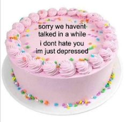
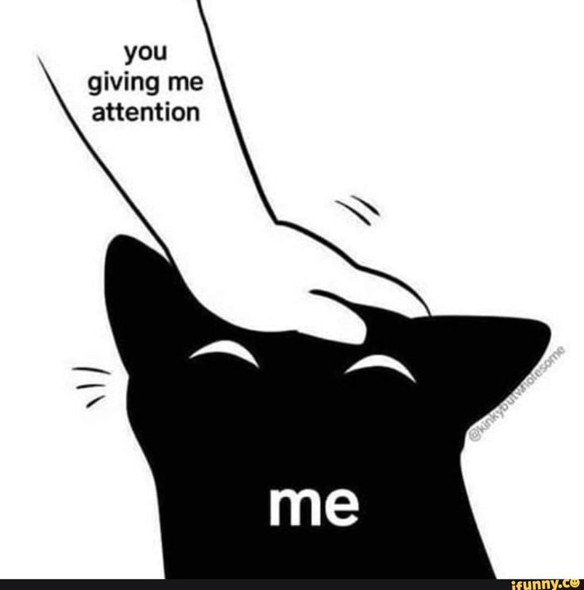

Umm.. Hello?
It was my first time blogging (again) in a long time (since junior high school, you know? I was very young) and I realized my childhood posts were ridiculous (in Indonesia it's called typing jamettie) and I didn't even think it was ever existed. *ew* And it seems (well, I guess) my lecturer wants me to be productive again by recording my campus activities in a journal published in a blog. *sobbing in the corner*
IT'S SOOOO TIRING BUT I LOVE WRITING AS MUCH AS I LOVE MY BOYFRIEND (no, i'm just kidding, hehe). I honestly feel happy with this assignment and I'll share my story in the college on this site. So, look forward to my every post and give this page lots of love :D
- in.
